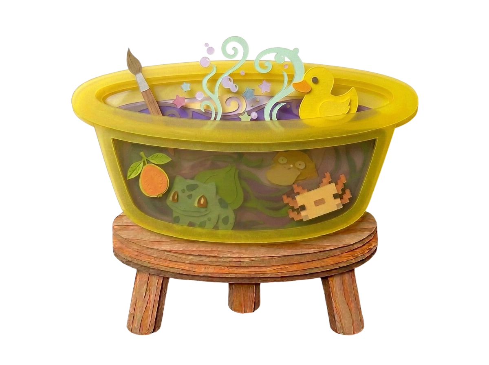
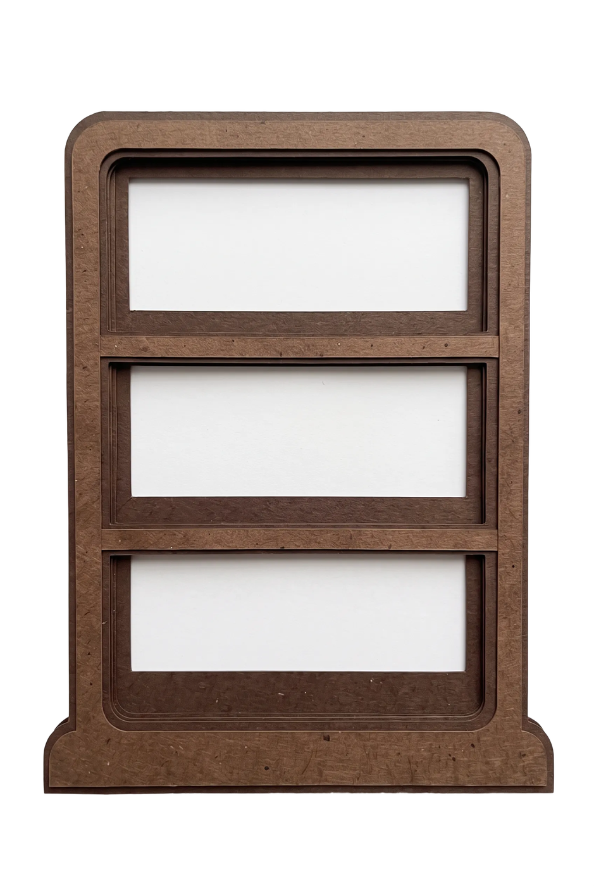
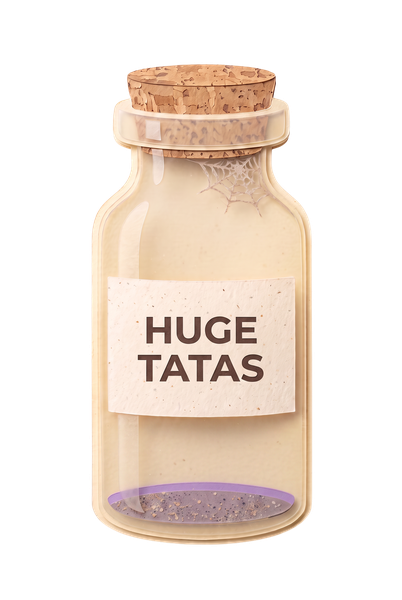
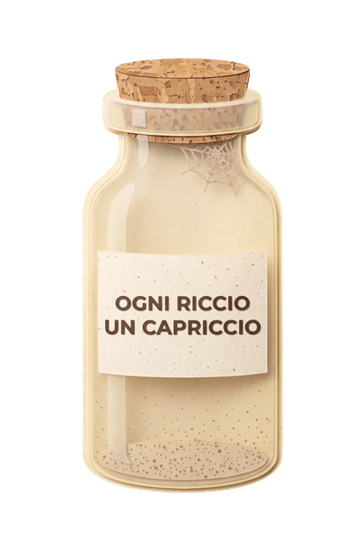
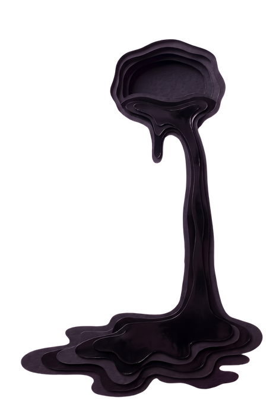
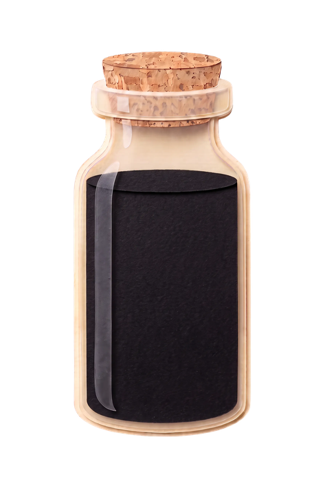
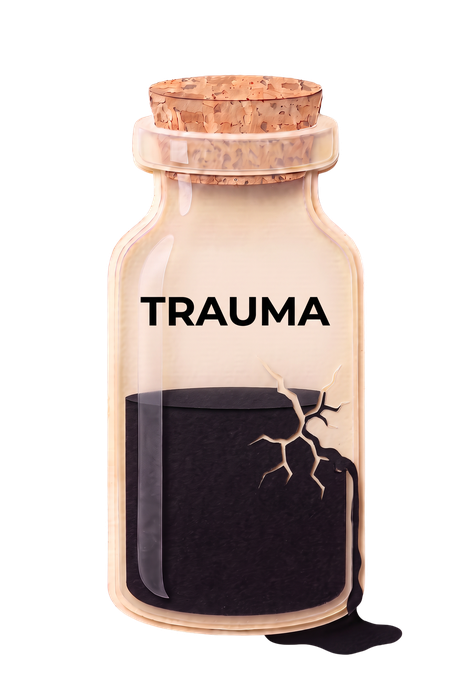
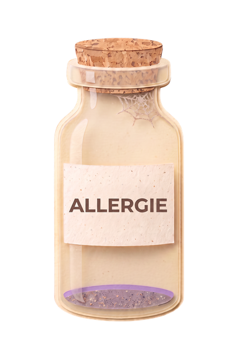
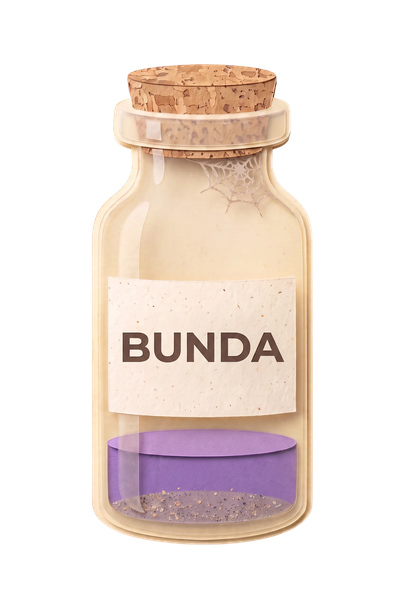
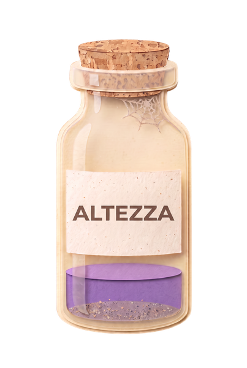

Buttercup
Tocca per attivare l'audio

s01-pandeiro.png

s01-scaglie.png

s01-bacinella.png

s01-scaffale.png

s01-barattolo-tette.png
TETTE GRANDI · ESAURITE NEL 1996

s01-barattolo-ricci.png
CAPELLI RICCI · ESAURITI
UNA VAGONATA DI TRAUMI

s01-liquido.png

s01-ampolla.png

s01-ampolla-crepata.png

s01-barattolo-allergie.png
ALLERGIE · DOSE PER TRE

s01-barattolo-bunda.png
BUNDA · ESAURITA

s01-barattolo-altezza.png
ALTEZZA · ULTIME GOCCE